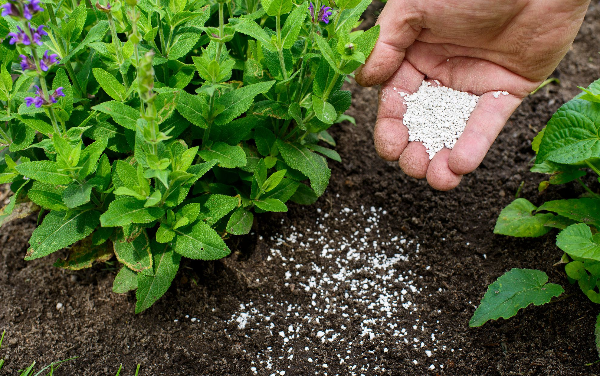

-

How to Fertilize Woodland strawberry?
Woodland strawberry likes fertile soil, but must avoid excessive fertilization. Otherwise, it is prone to root rot and poor fruit development. In summer, apply nitrogen, phosphorus, and potassium compound fertilizer that contains roughly equal proportions of the three main elements (10-10-10) every two weeks. Once the fruit is produced, supplement the plant with trace elements. At the beginning of fall, follow up with a compound fertilizer to replenish the nutrients consumed by fruit and lay the foundation for germination next spring. The soil in potted plants easily dries out.
As a result, fertilizer often remains in the pot and gradually accumulates due to the loss of water. Thus, you can usually apply less fertilizer for potted plants than those in open fields.
-

When is the best time to fertilize my Woodland strawberry?
If you grow your Woodland strawberry outdoors each year, this perennial plant will send new growth shooting out in early spring. The emergence of those leaves is a sign that the time is right to begin fertilization for the year. Often, a Woodland strawberry will perform just fine with a single application of fertilizer when the spring arrives. However, if you wish to maximize the growth of your Woodland strawberry, you can repeat the feeding multiple times throughout the spring and early summer. If you choose this route, you can feed your Woodland strawberry about once every month to a month and a half.
-

When should I avoid fertilizing my Woodland strawberry?
In the late fall and winter, your Woodland strawberry will enter a dormant phase in which it will no longer produce new growth. At this time, you should avoid fertilizing your Woodland strawberry. If you choose to fertilize multiple times during spring and summer, you should begin reducing your fertilization rate as summer approaches, as your Woodland strawberry 's growth rate will also slow. Overall, it is never a wise choice to fertilize your Woodland strawberry during times when the weather is unseasonably hot or when the soil is extraordinarily dry. Fertilizing in either of those cases can stress your Woodland strawberry and cause it to perish prematurely.